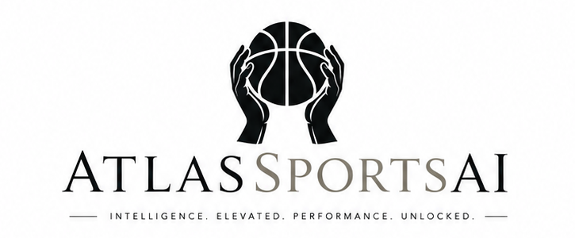

Media Guide
Atlas wants Ambassadors to create in their own voice while staying accurate, compliant, and clear about what Atlas does. Use the tools and platforms that help you reach your audience, as long as the content follows the conduct requirements.
Allowed Channels And Tools
- TikTok, Instagram, YouTube, Twitch, X, Facebook, Discord, podcasts, blogs, newsletters, livestreams, and local community channels.
- Editing tools, AI writing helpers, design software, screen recording tools, captions, analytics tools, and scheduling platforms.
- Self-created graphics, short-form videos, long-form videos, livestream clips, thumbnails, captions, carousels, overlays, and sales creatives.
- Personal commentary, educational breakdowns, product walkthroughs, public-facing screenshots, reaction content, and community Q&A.
- Atlas-provided graphics, public-facing dashboard views, and Atlas talking points may be used as optional source material.
Creative Freedom
Ambassadors may create their own sales content, visuals, video formats, scripts, thumbnails, and posting styles. Atlas-provided media is available for convenience, but Ambassadors are not limited to Atlas-generated content.
Creator confidence language, including phrases like "my lock of the day," is allowed when it is clearly personal excitement or opinion. Do not present Atlas as guaranteeing the outcome, do not impersonate Atlas ownership or employment, and do not expose premium/private content.
Approved Positioning
- AtlasSportsAI is a sports analytics and model-driven information platform.
- Atlas provides probabilities, EV views, slip outputs, market context, injury context, and model diagnostics.
- Atlas is expanding from NBA into MLB and additional sports.
- Atlas is building toward AtlasGPT, a mobile app, and a Sobol simulation engine.
Creator Campaign Ideas
- Turn confirmed winners into fast, high-energy recap posts, short videos, and before/after slate breakdowns.
- Use creator-native confidence hooks: "my Atlas lock of the day," "I feel great about this slip," "the model is heating up," or "this slate is built different."
- Promote Atlas as a serious AI-powered sports research stack built for probabilities, EV, slips, injury context, and market context.
- Use launch hooks around what is coming next: MLB, additional sports, the Sobol simulation engine, AtlasGPT, and the mobile app.
- Pitch early membership as a way to get in before the full AtlasGPT rollout and planned yearly-member beta access.
- Create bold promo angles such as: "Need a fully geared AI stack helping you research your bets? Join Atlas now while launch pricing is still early."
- Build creator-style content around daily slate energy, premium slip reveals, model heat checks, playoff runs, roadmap drops, and customer wins.
- Remix Atlas talking points into your own voice. Use humor, urgency, comparison videos, green-screen reactions, screen recordings, and creator-native formats.
Do Not Use
- "Guaranteed win", "risk-free", "free money", "can't lose", or similar guaranteed-outcome claims.
- Misleading screenshots, fake balances, fake user claims, or fake performance history.
- Any content targeting minors or encouraging irresponsible gambling behavior.
- Private operational screenshots, unreleased model internals, customer data, or private Discord content without approval.